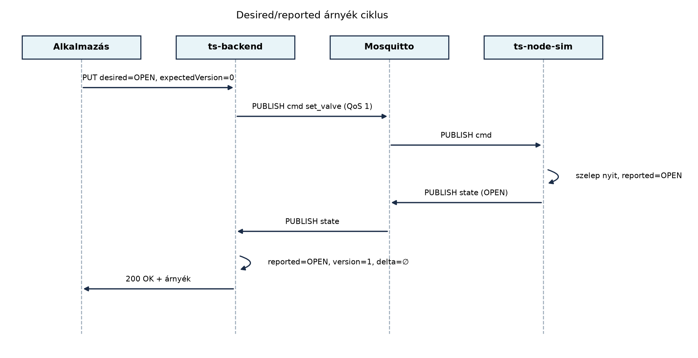

Az Parancsok és konfiguráció lefelé: kézbesítés,
nyugtázás, időkorlát alfejezetben a ts-backend
parancsot publikált a cmd topicra, az eszköz pedig a
cmd/result topicon nyugtázott. A parancsút azonban
önmagában nem ad választ egy alapvető kérdésre: mit tegyen a felhasználó
vagy a szabálymotor, amíg az eszköz nem nyugtáz? A TerraSense-ben
például a kezelő beállítja, hogy a gh1/n001 csomópont
öntözőszelepe legyen nyitva. A parancs elmegy MQTT-n, de az eszköz éppen
alszik vagy rossz a rádiós kapcsolat. A cmd/result csak
később, esetleg sosem érkezik meg. Az eszközárnyék (device shadow) ezt a
problémát úgy oldja meg, hogy a backendben külön tárolja a
kívánt (desired) és az eszköz által
jelentett (reported) állapotot, a kettő eltéréséből
pedig deltát számít. Így a felhasználó azonnal látja,
hogy a kívánt állapot még nem teljesült, és az eszköz következő
felébredésekor a delta újra kézbesíthető.
Definíció. Az eszközárnyék (device
shadow) az IoT-eszköz backendben tárolt, szerializálható,
üzemeltetési nézetű reprezentációja, amely legalább a kívánt állapotot
(desired), az eszköz által jelentett tényleges állapotot
(reported) és ezek eltérését (delta)
tartalmazza. A desired a rendszer vagy a felhasználó
által célként megadott állapot, a reported az eszköz
legutolsó állapotüzenetéből nyert tényleges állapot. A
delta a desired és a reported rendezett
összehasonlítása; ha a kettő nem egyezik, a delta a kívánt értéket
hordozza, és azt jelzi, hogy van még végrehajtandó munka.
A digitális iker ennél több. Definíció. A digitális iker az eszköz teljes, sokszor strukturált, térbeli, fizikai vagy viselkedési modellje, amely szimulációra, előrejelzésre és elemzésre is alkalmas. Az eszközárnyék gyakorlatorientált, kis erőforrású üzemeltetési nézet; a digitális iker a tervezési, üzemeltetési és elemzési rétegek közös modellje. A TerraSense-ben az eszközárnyék a szelep desired/reported állapotát tárolja, a digitális iker pedig például az üvegház hőmodelljét, az öntözés hatását és a várható termést is magában foglalná.
A működést a következő üzenetsor mutatja:

Az árnyék három forrásból frissül. A desired
frissítése jellemzően REST API-n, riasztási szabályból vagy
parancsrétegből érkezik, és a cmd topicra publikált
parancsot váltja ki. A reported frissítése az eszköz
state topicra küldött üzenetéből származik. A delta nem
önálló üzenet, hanem a tárolt desired és reported összehasonlításából
számított, származtatott mező.
Verziószám és konfliktus. Mivel a desired állapotot
több alkalmazás is módosíthatja, az árnyék minden íráskor növekvő
version értéket kap. A TerraSense laborban
optimista konkurenciavezérlést alkalmazunk: az ügyfél a
PUT hívásban elküldi az általa ismert
expectedVersion értéket. Ha az eltér a tárolt verziótól, a
backend 409 Conflict választ ad, és az ügyfélnek újra kell
olvasnia az árnyékot. Ez megakadályozza, hogy egy elavult kliens
felülírjon egy időközben beérkezett, újabb desired állapotot.
Retained üzenet vs. backend-tárolt árnyék. Az MQTT
retained üzenet a brokerben tárolja az utolsó, adott topicra publikált
üzenetet, és az újonnan feliratkozó kliensek azonnal megkapják. Ez
egyszerű megoldás az utolsó state vagy akár
desired érték megőrzésére. A backend-tárolt árnyék azonban
többet tud: együtt tárolja a desired és reported párokat, verziószámot,
időbélyeget, delta számítást, REST API-t és tranzakcionális frissítést.
A retained üzenetnek nincs delta fogalma és nem tudja kezelni a
konkurens írásokat.
| Szempont | Retained üzenet | Backend-tárolt árnyék |
|---|---|---|
| Desired és reported együtt | csak üzenetenként | egy objektumban |
| Delta számítás | nincs | van |
| Verzió és konfliktuskezelés | nincs | van |
| REST/API elérés | nincs | van |
| Broker-függőség | erős | gyenge |
| Tárolt adatmennyiség | egy üzenet | rendezett rekord |
A döntés TerraSense-ben egyértelmű: mivel a desired állapotot REST
API-n akarjuk kezelni, és a delta alapján újra kell kézbesíteni a
parancsot, a backend-tárolt árnyékot választjuk. A retained
state üzenetet továbbra is használhatjuk a frissen
csatlakozó eszközök gyors felzárkóztatására, de az árnyék igazságforrása
a backend adatbázisa.
A digitális iker (digital twin) fogalma nem egyetlen technológia, hanem architekturális minta. A TerraSense üvegházában a digitális iker tartalmazhatná a csomópontok fizikai elhelyezkedését, a szenzorok kalibrációs paramétereit, a szelepek hidraulikai jellemzőit, valamint a szimulációs modellt, amely például a hőmérséklet és a talajnedvesség alakulását előrejelzi. Az eszközárnyék ennek csak egyetlen, üzemeltetés közeli szelete.
Az Eclipse Ditto egy nyílt forrású, digitális iker platform, amely REST API-val és WebSocket-csatornákon keresztül teszi elérhetővé a dolgok állapotát. A Ditto a dolgokat JSON-szerű digitális ikerként modellezi, támogatja a desired/reported propertyket, a delta-értesítéseket, a policy-alapú hozzáférés-vezérlést és a HTTP/MQTT/AMQP kapcsolatokat. A nagy felhős szolgáltatások közül az AWS IoT Device Shadow, az Azure IoT Hub Device Twin és a Google Digital Twins hasonló desired/reported modellt kínál. Ellenőrzési igény. A Ditto aktuális verziója, pontos Java API-ja és a felhős szolgáltatások konkrét árnyék-semái folyamatosan változnak; a fenti rövid leírás stabil fogalmi összehasonlítás, nem adott verzióra vonatkozó specifikáció.
Legyen a gh1/n001 csomópont szelepárnyéka kezdetben:
| Mező | Érték | Magyarázat |
|---|---|---|
desired.valve_open |
false |
a kezelő még nem kért nyitást |
reported.valve_open |
false |
az eszköz state üzenete szerint zárva |
delta |
∅ |
nincs eltérés |
version |
0 |
még nem frissült |
A kezelő azt kéri, hogy a szelep legyen nyitva. A
ts-backend
PUT /api/shadows/gh1/n001/desired {"valveState":"OPEN","expectedVersion":0}
hívást kap. A ShadowService ellenőrzi a verziót, növeli
version-t 1-re, eltárolja a desired OPEN
állapotot, és a cmd topicra publikál egy
set_valve parancsot. Az árnyék ekkor:
| Mező | Érték |
|---|---|
desired.valve_open |
true |
reported.valve_open |
false |
delta.valve_open |
true |
version |
1 |
Amint az eszköz végrehajtja a parancsot, a state topicra
publikálja a {"valve_open": true} üzenetet. A backend
reported mezőt frissíti, és a verzió 2-re nő. A delta
kiürül:
| Mező | Érték |
|---|---|
desired.valve_open |
true |
reported.valve_open |
true |
delta |
∅ |
version |
2 |
Ha közben egy másik kliens expectedVersion=0 értékkel
próbált volna írni, a backend 409 Conflict választ adott
volna, mert a verzió már 1 vagy 2. Ez a minta garantálja, hogy a desired
állapot változásai követhetők maradnak.
A laborban a ts-backend Spring Boot projektet bővítjük
árnyékszolgáltatással. A cél: a desired állapot REST PUT-tal
beállítható, a parancs MQTT-n a szimulátorhoz jut, a szimulátor
state topicra publikál, a backend pedig frissíti a reported
mezőt és a deltát.
Munkakönyvtár:
mkdir -p ~/iot-labor/i050 && cd ~/iot-labor/i050A korábbi ts-node-sim.py szimulátort a Parancsok és konfiguráció lefelé: kézbesítés,
nyugtázás, időkorlát laborból hozzuk át, és kiegészítjük a
state topicra történő publikálással. A Spring Boot projekt
a ts-backend váza: REST API és
egészségellenőrzés laborban található; a fájlokat ott hozzuk létre a
src/main/java/.../ könyvtárban.
Előfeltétel. A Mosquitto fut a közös stackben, és a
ts-backend MQTT konfigurációja elérhető.
Első lépésként a DeviceShadow rekordot és a
ValveState enumot hozzuk létre:
public enum ValveState { OPEN, CLOSED, UNKNOWN }
public record ShadowKey(String site, String node) {}
public record DeviceShadow(ShadowKey key, ValveState desired, ValveState reported,
long version) {
public Optional<ValveState> delta() {
if (desired == reported) {
return Optional.empty();
}
return Optional.of(desired);
}
}A delta() akkor ad üres Optional-t, ha a
kívánt és a jelentett állapot azonos. Ha az eszköz még sosem jelentett
(például reported == UNKNOWN), a delta a desired értéket
tartalmazza, mert a kívánt állapot még nem teljesült.
A ShadowService egy HashMap-ben tárolja az
árnyékokat, és synchronized metódusokkal védi a
verzióellenőrzést és a frissítést:
@Service
public class ShadowService {
private final Map<ShadowKey, DeviceShadow> shadows = new HashMap<>();
private final MqttCommandGateway commandGateway;
public ShadowService(MqttCommandGateway commandGateway) {
this.commandGateway = commandGateway;
}
public synchronized DeviceShadow updateDesired(ShadowKey key, ValveState desired,
long expectedVersion) {
DeviceShadow current = shadows.getOrDefault(key,
new DeviceShadow(key, ValveState.UNKNOWN, ValveState.UNKNOWN, 0L));
if (expectedVersion != current.version()) {
throw new ResponseStatusException(HttpStatus.CONFLICT,
"Shadow version mismatch");
}
DeviceShadow updated = new DeviceShadow(key, desired, current.reported(),
current.version() + 1);
shadows.put(key, updated);
commandGateway.sendValveCommand(key, desired);
return updated;
}
public synchronized DeviceShadow updateReported(ShadowKey key, ValveState reported) {
DeviceShadow current = shadows.getOrDefault(key,
new DeviceShadow(key, ValveState.UNKNOWN, ValveState.UNKNOWN, 0L));
DeviceShadow updated = new DeviceShadow(key, current.desired(), reported,
current.version() + 1);
shadows.put(key, updated);
return updated;
}
public Optional<DeviceShadow> get(ShadowKey key) {
return Optional.ofNullable(shadows.get(key));
}
}A MqttCommandGateway a Parancsok és
konfiguráció lefelé: kézbesítés, nyugtázás, időkorlát labor
MqttCommandGateway interfésze, amely a
terrasense/<site>/<node>/cmd topicra publikál.
A sendValveCommand itt egy set_valve típusú
parancsot hoz létre.
A REST vezérlő a desired beállítását és az árnyék lekérdezését teszi elérhetővé:
@RestController
@RequestMapping("/api/shadows")
public class ShadowController {
private final ShadowService shadowService;
public ShadowController(ShadowService shadowService) {
this.shadowService = shadowService;
}
@GetMapping("/{site}/{node}")
public DeviceShadow get(@PathVariable String site, @PathVariable String node) {
return shadowService.get(new ShadowKey(site, node))
.orElseThrow(() -> new ResponseStatusException(HttpStatus.NOT_FOUND,
"Shadow not found"));
}
@PutMapping("/{site}/{node}/desired")
public DeviceShadow updateDesired(@PathVariable String site, @PathVariable String node,
@RequestBody DesiredRequest request) {
return shadowService.updateDesired(new ShadowKey(site, node),
request.valveState(), request.expectedVersion());
}
}A kérelem rekordja:
public record DesiredRequest(ValveState valveState, long expectedVersion) {}A szimulátort a ts-node-sim.py fájlban bővítjük ki. A
cmd üzenet feldolgozása után a szelep tényleges állapotát a
state topicra publikálja:
import paho.mqtt.client as mqtt
import json
import time
SITE = "gh1"
NODE = "n001"
BROKER = "localhost"
valve_open = False
def on_cmd(client, userdata, msg):
global valve_open
cmd = json.loads(msg.payload)
if cmd["type"] == "set_valve":
valve_open = cmd["params"]["open"]
print(f"[ts-node-sim] szelep: {'OPEN' if valve_open else 'CLOSED'}")
client.publish(f"terrasense/{SITE}/{NODE}/state",
json.dumps({"node_id": NODE, "ts": int(time.time() * 1000),
"valve_open": valve_open}), qos=1)
client.publish(f"terrasense/{SITE}/{NODE}/cmd/result",
json.dumps({"id": cmd["id"], "status": "SUCCESS"}), qos=1)
client = mqtt.Client(mqtt.CallbackAPIVersion.VERSION2)
client.on_message = on_cmd
client.connect(BROKER)
client.subscribe(f"terrasense/{SITE}/{NODE}/cmd", qos=1)
client.loop_forever()A backendben az MQTT-feldolgozó a state topic üzenetéből
meghívja a ShadowService.updateReported metódust, hogy a
reported mező frissüljön.
Futtatás. Indítsuk a stack-et és a backendet, majd a szimulátort:
docker compose -f ~/iot-labor/stack/compose.yaml up -d mosquitto
cd ~/iot-labor/i043 && mvn spring-boot:run
python3 ~/iot-labor/i050/ts-node-sim.pyEgy másik terminálban állítsuk be a desired állapotot:
curl -X PUT -H 'Content-Type: application/json' \
-d '{"valveState":"OPEN","expectedVersion":0}' \
http://localhost:8080/api/shadows/gh1/n001/desiredVárt kimenet (a szimulátor termináljában):
[ts-node-sim] szelep: OPENEzután kérdezzük le az árnyékot:
curl http://localhost:8080/api/shadows/gh1/n001Várt kimenet (rövidítve):
{"key":{"site":"gh1","node":"n001"},"desired":"OPEN","reported":"OPEN","version":2}A delta nem szerepel, mert a desired és a reported
megegyezik. Ha a szimulátor leállítása előtt ismét beállítjuk a
CLOSED desired állapotot, az árnyékban a reported még
OPEN, a delta CLOSED lesz, amíg a szimulátor
nem jelenti az új állapotot.
| Hibatünet | Ok | Javítás |
|---|---|---|
A PUT hívás 409 Conflict választ ad |
A expectedVersion nem egyezik a tárolt verzióval |
GET-tel kérdezzük le az aktuális verziót, majd azzal frissítsünk |
| A szimulátor nem nyitja a szelepet | A backend nem publikál a cmd topicra, vagy a topic neve
hibás |
Ellenőrizzük a MqttCommandGateway topic-összeállítását
és a Mosquitto logot |
| A reported mező nem frissül | A szimulátor nem publikál a state topicra, vagy a
backend nem iratkozott fel rá |
Ellenőrizzük a state topic nevét és a backend
MQTT-feliratkozását |
| A delta mindig a desired értéket mutatja | A reported UNKNOWN, mert az eszköz még sosem
jelentett |
Ez lehet helyes működés; várjuk meg az első state
üzenetet |
desired == reported módon történik, és a
reported értéke null vagy
UNKNOWN, a program NullPointerException-t
dobhat vagy hamis deltát ad. Mindig kezeljük külön a hiányzó reported
állapotot.state üzenetéből kell frissíteni.Melyik megoldást választaná egy olyan TerraSense-üzemeltetéshez, ahol a kezelőnek azonnal látnia kell, ha a szelep kívánt és tényleges állapota eltér, és a parancsot esetleg újra kell küldeni? Indokolja a retained üzenet és a backend-tárolt árnyék közötti választást.
Egy üvegházban 40 csomópont van. Minden csomópont percenként küld
state üzenetet a state topicra. A backend
árnyéktárolása minden reported frissítésnél növeli a verziót. Hány
verziólépés keletkezik egy óra alatt a teljes flottában, ha a desired
frissítés átlagosan óránként 2 alkalommal történik csomópontonként?
Tegyük fel, hogy a verzió nem csökken.
Bővítse a labor ShadowService osztályát egy
listAllDeltas() metódussal, amely visszaadja az összes
olyan ShadowKey-t, ahol a delta nem üres. A metódus
segítségével a backend indításakor ütemezett feladat újraküldheti a
parancsot azoknak az eszközöknek, amelyeknek desired és reported
állapota eltér.
A laborban a szimulátor state üzenetben nem küldi el a
seq mezőt. Ez milyen hibához vezethet a Ingest: MQTT-ből a backendbe, idempotensen
alfejezetből ismert idempotens ingest-tel? Módosítsa a szimulátort és a
backend state feldolgozóját úgy, hogy a reported frissítés
csak akkor növelje a verziót, ha a seq érték nőtt.
Backend-tárolt árnyékot kell választani, mert a retained üzenet nem tartalmaz desired/reported párokat, sem delta, sem verzió fogalmat. A backend-tárolt árnyék REST API-val elérhető, és a delta alapján a backend újra tudja kézbesíteni a parancsot. A retained üzenet legfeljebb a frissen csatlakozó eszközök gyors felzárkóztatására szolgál.
A reported frissítések száma óránként csomópontonként , a 40 csomópontra összesen verziólépés. A desired frissítések száma . A teljes verziólépés óránként . Ez nem azt jelenti, hogy a manyag verziók 2480-ra nőnek; a verzió monoton növekszik, tehát csomópontonként átlagosan lépés óránként.
public synchronized List<ShadowKey> listAllDeltas() {
return shadows.values().stream()
.filter(shadow -> shadow.delta().isPresent())
.map(DeviceShadow::key)
.toList();
}Az ütemezett feladat ezt a listát használva minden kulcshoz lekéri az
árnyékot, és a MqttCommandGateway.sendValveCommand
metódussal újraküldi a kívánt állapotot. A feladatot
@Scheduled(fixedDelay = 30_000) annotációval érdemes
ütemezni, de a pontos ütemezési stratégia a flotta méretétől függ.
A seq hiánya miatt az ingest nem tud idempotensen
deduplikálni: ha a state üzenet kétszer érkezik meg, a
reported mező kétszer frissül, és a verzió kétszer nő. Ez hamis
verziólépéshez és felesleges parancs-újraküldéshez vezethet. A
szimulátor a state üzenetben küldje el a monoton
seq értéket; a backend pedig egy lastSeq mezőt
tartson a DeviceShadow rekordban, és csak akkor hívja a
ShadowService.updateReported metódust, ha az új
seq nagyobb, mint az előző. Az ilyen deduplikáció szükséges
az idempotens ingest biztosításához.
Az eszközárnyék a desired és reported állapot, valamint a delta
tárolója a backendben. A desired frissítése parancsot vált ki, a
reported frissítése az eszköz state üzenetéből származik, a
delta pedig a kettő eltérése. A verziószám optimista
konkurenciavezérlést tesz lehetővé: az elavult írás 409 Conflict választ
kap. A backend-tárolt árnyék jobb a retained üzenetnél, mert deltát,
verziót és REST API-t ad. A digitális iker ennél bővebb modell,
szimulációval és előrejelzéssel; az Eclipse Ditto és a felhős
szolgáltatások ilyen platformok. A laborban a ts-backend
ShadowService-e a szelep desired/reported árnyékát kezeli,
a Python szimulátor pedig a state topicon jelenti a
tényleges szelepállapotot. Továbbvitt eredmény. A
DeviceShadow, a ShadowService delta-számítása
és a verziókezelés az Flottakezelés: nyilvántartás,
konfiguráció, állapot alfejezetben a flottaállapot-nyilvántartáshoz,
valamint a Záróprojekt: a teljes TerraSense rendszer
összeállítása és átvétele alfejezetben a végponttól végpontig tartó
átvételi tesztekhez használható.
Az eszközárnyék desired/reported/delta modelljének fogalmi alapja az
AWS IoT Device Shadow dokumentációjában és az Eclipse Ditto fogalmi
leírásában található. A labor kódja a Spring Boot 3 és a Paho MQTT
Python kliens stabil fogalmaira épül. Ellenőrzési
igény. Az Eclipse Ditto aktuális verziója, Java API-ja, a
felhős árnyékszolgáltatások pontos séma és a Python
paho-mqtt callback API verziója gyorsan változik; használat
előtt ellenőrizze az aktuális dokumentációt. A laborkörnyezetben a
state topic üzenetek seq mezőjét a későbbi idempotens
feldolgozás konzisztenciája miatt kell bevezetni.